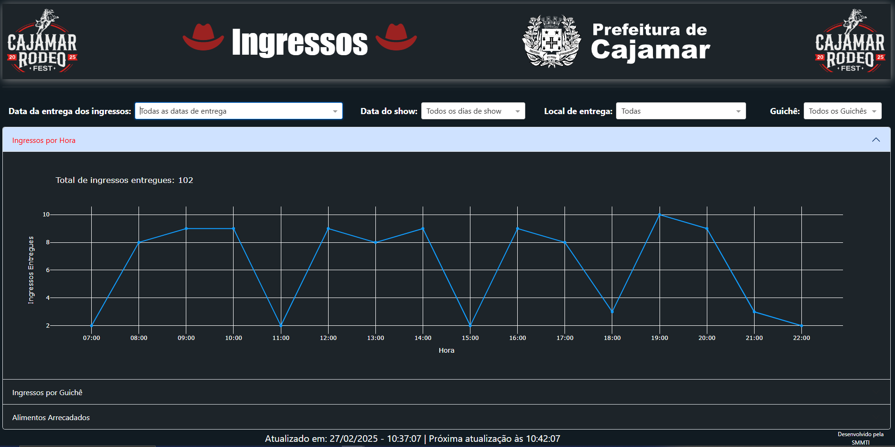
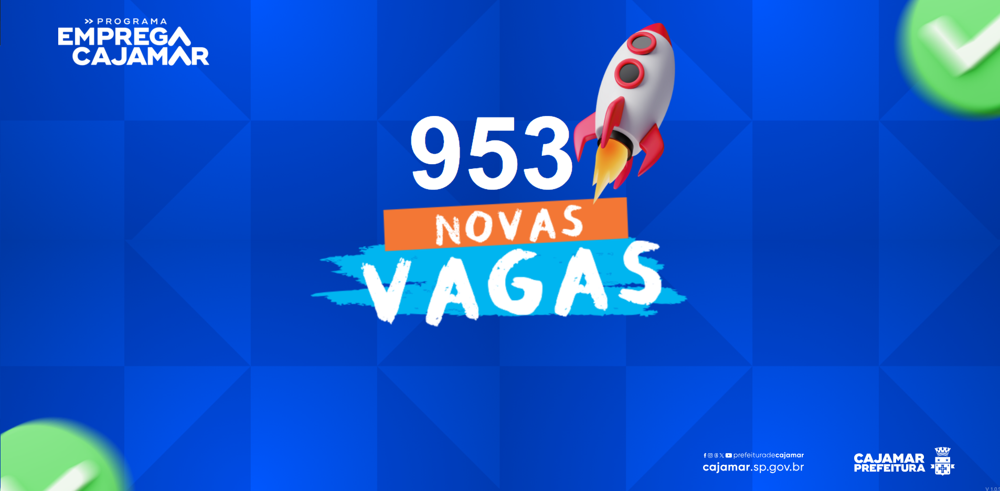
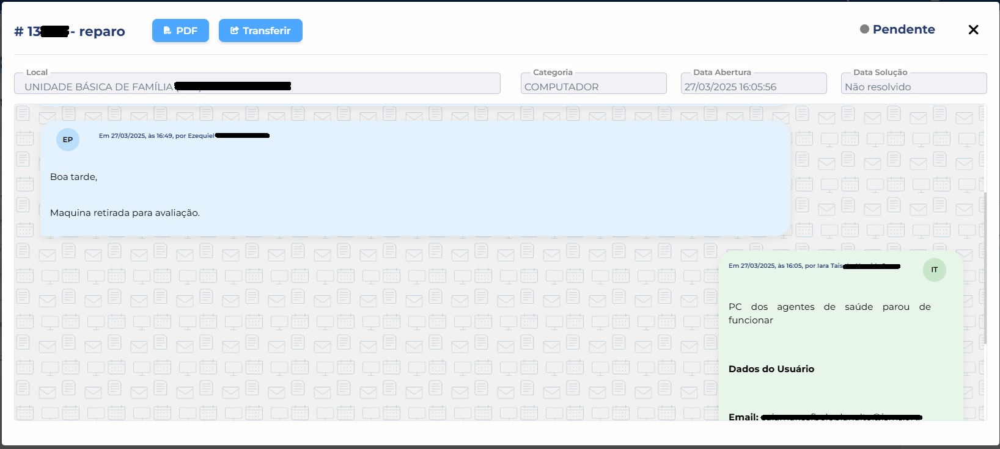
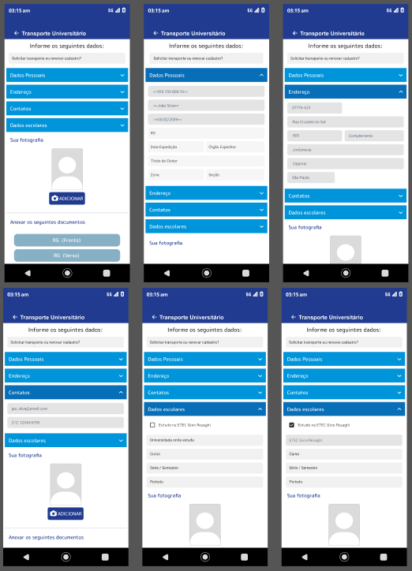

{ Rene Nathan }

Sou um profissional multifacetado com sólida experiência em administração pública e desenvolvimento front-end. Atualmente atuo como Agente Administrativo na Prefeitura Municipal de Cajamar, onde aplico metodologias de gestão, otimizo processos administrativos e garanto conformidade com normas e procedimentos. Paralelamente, desenvolvo projetos web centrados em usabilidade, acessibilidade e automação de conteúdo — criando interfaces intuitivas e ferramentas que reduzem tarefas repetitivas e melhoram a experiência do usuário. Minha atuação combina visão estratégica na gestão pública com competências técnicas em front-end, resultando em soluções práticas que conectam tecnologia, eficiência e serviço público de qualidade.
Sou um profissional multifacetado com sólida experiência em administração pública e desenvolvimento front-end.
⚙️Projetos realizados⚙️

Dash controle de eventos
Projeto do ambiente frontend de dashs para demonstrar os mais diversos dados de um evento

Dash display para eventos
Dashs de demonstração de dados para serem apresentados em eventos de modo a disponibilizar dados ou indicadores especificons

Design de interface de mensageria
Criação e implementação de interfaces de mensageria para atendimentos diversos

Formulários de cadastro diversos
Criação dos mais diversos formulários de cadastro para serem usados em ambientes web desktop ou mobile.
Perfil
Rene Nathan Alves Nascimento
Desenvolvedor Front-End, formado em Análise e Desenvolvimento de Sistemas; pós-graduado em Engenharia de Redes; MBA em Contabilidade Pública Municipal; e atualmente agente administrativo e desenvolvedor web na Secretaria Municipal de Modernização, Tecnologia e Inovação da Prefeitura Municipal de Cajamar.
Github pessoal com projetos pessoais e estudos.
Clique aquiRede social profissional focada no mercado de trabalho.
Clique aqui